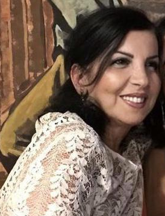

EMAIL ↗Angela Sirigu
CNRS Research Director
Institut de Neurosciences de la Timone · Marseille
Angela Sirigu studies the neural mechanisms underlying social cognition, action and conscious experience, with a particular interest in oxytocin and the biological foundations of social behaviour. After obtaining her doctorate in Psychology from Sapienza University in Rome, she trained in Neuropsychology at La Timone Hospital in Marseille and subsequently conducted postdoctoral research at the National Institutes of Health (NIH) in Bethesda. She returned to France to work at La Salpêtrière Hospital in Paris before joining the CNRS.
At the invitation of Marc Jeannerod, she joined the Institute of Cognitive Sciences in Lyon, where she developed a research programme combining human neuropsychology, neuroimaging and experimental neuroscience, and later served as Director from 2016 to 2020. She subsequently joined the Institut de Neurosciences de la Timone (INT) in Marseille, where she leads the Sirigu Lab. Her current research investigates how social behaviour and social space are represented in the brain, and how these processes are shaped by neuromodulatory systems, particularly oxytocin. This work includes OxytocINspace, an ERC-funded programme investigating the neural foundations of social and territorial behaviour.
Originally from Ogliastra in Sardinia, she remains deeply attached to the region, its landscapes and its Sardinian language.